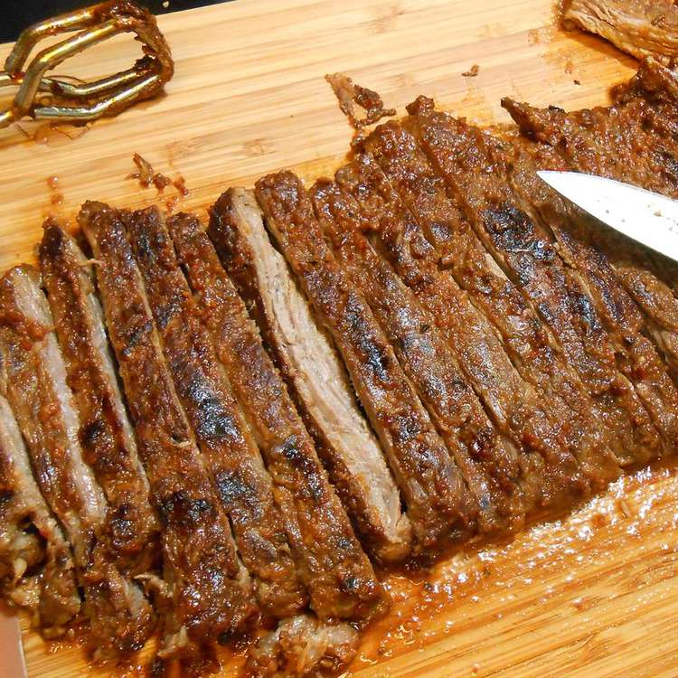

Mexican Steak

Description
This is a great way to serve skirt or flank steak. The two day marinade is worth the wait.
Ingredient
- 1/2 cup cumin seeds
- 5 jalapeno peppers, seeds and ribs removed, chopped
- 3 cloves garlic
- 1 tbsp cracked black pepper
- 1/3 cup fresh lime juice
- 1 1/2 tsp salt
- 1 1/2 cups olive oil
Steps
- Toast the cumin seeds in a medium saute pan over medium-low heat for 5 minutes, or until fragrant.
- In a blender, combine the cumin seeds, jalapenos, garlic, pepper, lime juice, and salt. Pulse the blender to finely chop ingredients. Add the oil and cilantro and puree until smooth.
- Lightly score both sides of the meat with a knife so that the marinade will penetrate. Place the meat in a large plastic bag or bowl, pour in the marinade, and coat well. Marinate in the refrigerator for 24 to 48 hours.
- Preheat an outdoor grill for high heat and lightly oil grate.
- Remove the meat from the marinade and discard the remaining marinade. Cook on high, 1 to 2 minutes per side, to sear the meat. Turn the heat down to low and cook for an additional 3 to 4 minutes per side, or until the it has reached the desired doneness.